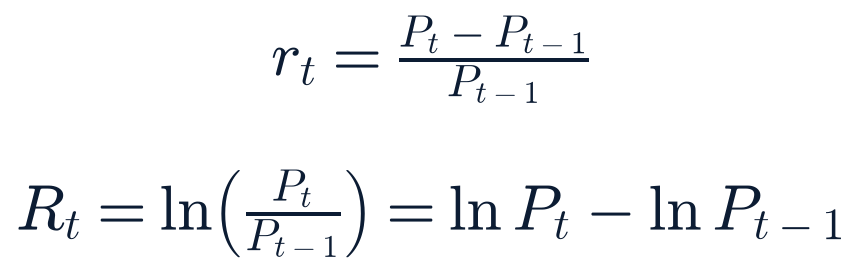

1 source unavailable/degraded this run — see System health at the bottom.
Data freshness by source, this run.
Source
Freshness label
Data age
Treasury par curve
EOD official
Fri 2026-07-24 close
FRED (rates, inflation, labor, credit)
EOD official
2026-07-23/24 (series-dependent)
Cboe VIX complex
EOD official
Fri 2026-07-24 16:15 ET close
Frankfurter FX (ECB reference)
EOD official
Fri 2026-07-24
CoinGecko crypto
Live
~15 min
Twelve Data equity/ETF quotes
Previous close
Fri 2026-07-24 close
Index futures & commodities (Yahoo)
Reported (secondary)
~30–60 min, via news synthesis
SEC EDGAR (market-wide + 90-ticker sweep)
Live
this run
FINRA short volume
EOD official
Fri 2026-07-24
News (WebSearch)
Live
this run
Section 2Top Stories
Materially changedConfirmed — multiple sources
US-Iran pause holds a third day; oil craters ~5–7%, US futures surge into FOMC week
Event: overnight Sat–Sun into Mon · Published: rolling coverage through Mon AM · Last checked 08:20 ET
What happened
The US and Iran have now gone three consecutive days without a strike, after 13 straight nights of attacks that reignited the conflict following its April ceasefire. Trump is reported to be giving renewed talks “some space.” WTI crude fell roughly 5.4% to $84.51/bbl and Brent fell as much as 7.4% intraday before paring losses to around $90/bbl. US index futures jumped on the news: S&P 500 futures +0.8–0.9%, Nasdaq-100 futures +1.3–1.4%, Dow futures +0.7–1.0% as of this morning (figures below are news-reported, not this run’s own primary quote feed — see Premarket Setup).
Why it matters
This is the most market-relevant overnight development for a week that already carries an FOMC decision, four mega-cap earnings reports, and a GDP print. A sustained de-escalation would remove the oil-driven inflation tail risk that had been pushing FOMC hike odds higher through last week.
What is confirmed
The absence of strikes for three nights and the oil/futures market reaction are corroborated across Bloomberg, CNBC, Yahoo Finance and CNN. The underlying dispute (Strait of Hormuz shipping tolls, reparations, Iran’s ballistic-missile program) remains unresolved per the same reporting.
What remains uncertain
Whether the pause becomes a durable ceasefire or is another temporary lull like April’s (which broke down after roughly three months). No new written agreement has been reported.
Context
Updates forecast 2026-07-27-am-1 (hike-probability judgment call) downward in direction, and links directly to forecast 2026-07-26-sun-4 (10Y yield range) and 2026-07-26-sun-6 (ceasefire-holds forecast), both still open.
Impact
Markets (broad risk-on premarket tone) · rates (lower breakeven-inflation pressure) · energy (WTI/Brent/XLE/XOP) · geopolitics (Strait of Hormuz shipping risk easing at the margin).
What happens next
Any resumption of strikes, or a formal extension of the pause, would be the next confirming/disconfirming signal; watch through the FOMC-week news cycle.
Sources: Bloomberg market wrap (secondary, aggregating primary price data) · CNBC · Yahoo Finance markets live blog · CNN live coverage · Fortune oil-price roundup.
Expanded analysis (collapsed by default)
The pattern since April has been pause-escalate-pause: an initial ceasefire held roughly three months before a two-week reignition in early-to-mid July, which itself is now giving way to a third consecutive quiet night. Each prior pause was treated by markets as at least partially durable, and each time the underlying disputes (Hormuz tolls, reparations, missile program) went unresolved. The size of this morning’s oil move (a mid-single-digit percentage drop) suggests positioning had built up meaningfully hawkish/risk-off bets into the weekend that are now unwinding, not that markets are pricing full resolution. Nothing in this run’s primary-source sweep (Treasury, FRED, Cboe) yet reflects Monday trading — those feeds still show Friday’s pre-news levels, so the market reaction described here is drawn from secondary reporting only and should be treated as directionally reliable but not verified against this system’s own quote feed.
ContinuingConfirmed — multiple sources
FOMC decides Wednesday under Chair Kevin Warsh; hold still favored but hike odds elevated
Event: Wed Jul 29, 2:00 PM ET (statement) / 2:30 PM ET (press conference) · Published: ongoing preview coverage · Last checked 08:20 ET
What happened
This is a non-SEP meeting (no Summary of Economic Projections / dot plot), so the statement, vote count and Warsh’s press conference are the only new policy signals. Press-reported CME FedWatch-style pricing put the probability of a hold at roughly 61–65% as of Jul 23–25, with a hike scenario at 35–39%; the most recent read cited this morning (Sunday-evening synthesis) shows roughly 65.3% for a hold, alongside rising odds (∼82%) of a September hike instead. None of this is pulled from CME’s own FedWatch tool directly — it is outside this system’s egress allowlist — so all probabilities here are press-reported, not live-modeled.
Why it matters
Warsh, sworn in May 22, 2026, has explicitly abandoned Powell-era forward guidance, so market pricing is unusually sensitive to the statement language itself rather than dot-plot continuity. This is his second meeting as chair.
What is confirmed
The meeting date/time and non-SEP status (federalreserve.gov primary). Warsh’s chairmanship (confirmed 54-45 by the Senate May 12–13, 2026, sworn in May 22 — see correction in Section 20).
What remains uncertain
Whether this weekend’s oil-price reversal (Story 1) meaningfully softens the hike case that had been building on Iran-driven energy-price fears; that shift is not yet reflected in the most recently published FedWatch-style reads.
Context
Forecast 2026-07-27-am-1 (20–30% probability of a surprise hike) already discounted the hawkish case downward ahead of this morning’s oil move; today’s development is a modest incremental reason to lean toward the lower end of that range, not a basis to re-forecast intraday.
Impact
Rates (2Y most sensitive) · equities (broad, especially rate-sensitive sectors) · dollar · credit spreads.
What happens next
FOMC meeting begins Tuesday; decision and press conference Wednesday afternoon; GDP Thursday will be read partly through the decision’s lens.
Related assets (exposure ≠ direction)
SHY, IEI, SOFR-linked funds, KRE, XLF, TLT
Sources: federalreserve.gov (primary, meeting calendar) · CNBC, NPR, Forbes, TradingKey, StocksAnalyzer (press synthesis of market-implied odds) · Chase/JPMorgan commentary on Warsh’s June meeting.
Expanded analysis (collapsed by default)
Two competing narratives are visible in this week’s previews: persistent above-target inflation (cited by hawks as grounds for a hike) versus cooling June CPI/PPI prints (cited by doves as grounds to hold). This run’s own FRED pull of CPIAUCSL shows a notably soft seasonally-adjusted month-over-month read for June (see Section 8), which is one data point supporting the hold case, though a single month is not conclusive and the series had one interpolated/missing entry (Oct 2025) worth flagging for data-quality awareness.
ContinuingConfirmed — multiple sources
Four hyperscalers report Wed–Thu into a $725B 2026 AI-capex backdrop
Event: Wed Jul 29 (MSFT, META, ARM, QCOM after close) / Thu Jul 30 (AAPL, AMZN after close, V before open) · Last checked 08:20 ET
What happened
Microsoft, Meta, Arm and Qualcomm report Wednesday after the close; Apple and Amazon report Thursday after the close, with Visa reporting Thursday before the open. Analyst consensus cited this morning puts combined 2026 capex for Microsoft, Amazon, Alphabet and Meta near $725B, up 77% year-over-year from about $410B in 2025, with 2027 capex projected by some analysts to top $1 trillion.
Why it matters
These four names carry outsized index weight; a shared reaction to capex commentary (rather than to headline EPS beats/misses) would be a concentrated market-structure risk, which is exactly what forecast 2026-07-26-sun-3 is tracking.
What is confirmed
Report dates/times (Confirmed-multiple via CNBC, Kiplinger, TipRanks); Meta’s $125–145B FY26 capex guidance range (previously issued, reiterated in this week’s previews).
What remains uncertain
Whether Microsoft’s Azure growth and Amazon’s AWS re-acceleration (consensus ~$40.5B in cloud revenue) are read as capex finally monetizing, or as further margin compression — Microsoft shares are down roughly 18% year-to-date per this morning’s previews, an unusual setup heading into a mega-cap print.
Context
Unchanged from Sunday’s framing; this run adds the specific $725B/77% figure and the Microsoft YTD-underperformance detail from this morning’s previews.
Impact
Markets (index-level, given combined weight) · tech/AI industry (capex trajectory read-through to semis, power, data-center REITs) · companies (MSFT, META, ARM, QCOM, AAPL, AMZN, V directly).
What happens next
Wednesday and Thursday after-close reactions; Friday’s Employment Cost Index closes the week’s data calendar alongside any earnings-driven follow-through.
Sources: CNBC, Kiplinger, TipRanks, AskTraders, FX Leaders, Seeking Alpha, GuruFocus earnings-week previews (secondary, consistent across outlets).
Expanded analysis (collapsed by default)
This run’s own SEC EDGAR sweep of the 90-company watchlist (including all four hyperscalers) found no new material 8-K filings since Sunday’s report — nothing pre-announced ahead of Wednesday. Friday’s closing tape (this run’s Twelve Data pull) showed broad AI-infrastructure softness heading into the print: Vertiv (VRT) −4.5%, Broadcom (AVGO) −2.7%, Taiwan Semi (TSM) −2.9%, Arista (ANET) −1.5%, all on Friday’s close, alongside Nvidia −0.9% — a soft-into-earnings setup across the supply chain, not just the four reporters themselves.
Event: strike Jul 25 · Published: rolling Jul 25–27 · Last checked 08:20 ET
What happened
Ukraine’s security service and President Zelensky confirmed striking vessels in the Caspian Sea on Jul 25, including one described by Ukraine’s ambassador to Israel as carrying drone/missile components moving between Iran and Russia. Iran’s Foreign Ministry says the vessel was a commercial ship, that one sailor was killed and another injured, and disputes the military-cargo characterization. Foreign Minister Araghchi called the strike something that “cannot go unanswered”; Iran has summoned Ukraine’s chargé d’affaires.
Why it matters
This is a new front (Caspian shipping lanes tied to Russia-Iran military logistics) opening inside an already-active Iran conflict, raising escalation risk on a second axis just as the direct US-Iran track shows signs of cooling (Story 1).
What is confirmed
Both sides now confirm a strike occurred (upgrading this from Sunday’s single-source status); what remains disputed is the cargo’s nature and the casualty account.
What remains uncertain
Independent verification of the cargo manifest; whether Iran follows through on retaliation threats, and against whom.
Context
Upgraded from Sunday’s Single-reliable-source (Times of Israel only) framing, which understated how contested and consequential this incident is. This is exactly the kind of correction Section 20 tracks.
Impact
Geopolitics (Russia-Ukraine and Iran conflicts increasingly entangled) · energy (Caspian/Black Sea shipping risk) · no direct US market linkage identified.
What happens next
Watch for Iranian retaliatory action and any Russian response, given the vessel’s reported Iran-Russia logistics role.
Related assets (exposure ≠ direction)
USO, XLE (indirect, via broader Iran-conflict energy risk)
Sources: CNBC · Newsweek · Euronews · The National · Al Jazeera · Kyiv Independent · i24NEWS (multiple independent outlets, both sides represented).
Expanded analysis (collapsed by default)
Per SR §6 neutrality method: Ukraine’s account (military-cargo interdiction, part of a broader pattern of Kyiv striking Russian logistics deep behind the front) and Iran’s account (a civilian vessel, one sailor killed) are both stated here without endorsement. Neither claim has independent third-party verification of the cargo manifest as of this run.
Materially changedConfirmed — multiple sources
Wildfires force 300,000+ evacuations across Spain and France; Macron calls crisis meeting
Event: ongoing since ~Jul 22 · Published: rolling through Jul 27 · Last checked 08:20 ET
What happened
More than 320,000 people have been evacuated across France and Spain. In France’s Gironde region, roughly 220,000 people were evacuated after a fire burned more than 100,000 acres (∼42,000 hectares) and approached Bordeaux; French President Macron called a crisis meeting Monday, and the Gironde prefecture said the overnight situation had stabilized with no new evacuations ordered Monday. In Spain, a wildfire near Madrid was described by a regional official as “beyond the capacity of firefighters to contain” at its peak; 14 deaths have been confirmed in Spanish wildfires this month with 10 people still missing. Italy, Portugal and the UK are also affected by the same heatwave.
Why it matters
This is being described as France’s largest peacetime evacuation event in the Gironde region in decades, occurring alongside confirmed fatalities in Spain — a large-scale humanitarian and climate story independent of markets.
What is confirmed
Evacuation totals and the Gironde fire’s scale (CNN, Al Jazeera, NPR, Euronews, CNBC all corroborate); the 14 confirmed Spanish deaths and 10 missing.
What remains uncertain
Total economic/insured losses; whether temperatures forecast to rise again this week (with no rain in sight per NPR) will trigger new evacuation orders.
Context
New to Top Stories this run given the scale of the humanitarian impact; carried on the watchlist from Sunday’s report as a smaller item.
Impact
People (evacuations, fatalities) · European agriculture/tourism (Bordeaux wine region) · no direct US market linkage identified.
What happens next
Continued firefighting through a forecast heat build this week; Macron’s crisis-meeting outcomes.
Related assets (exposure ≠ direction)
None identified — humanitarian/climate story, not a market-driver this run
The combination of an extended European heatwave, no forecast rain, and already-committed firefighting resources across four countries (France, Spain, Portugal, Italy) simultaneously is the underlying structural risk here — mutual-aid capacity is finite when multiple countries are burning at once.
ContinuingConfirmed — primary source
Q2 2026 GDP advance estimate lands Thursday, one day after the Fed
Event: Thu Jul 30, 8:30 AM ET · Last checked 08:20 ET
What happened
BEA’s advance Q2 GDP estimate is scheduled for Thursday morning, read partly through the lens of Wednesday’s FOMC decision. The Atlanta Fed GDPNow tracking estimate stood at +1.7% annualized as of Jul 17 (via press reporting; this system does not have a direct GDPNow API pull), down from a late-May peak near 3.8%.
Why it matters
First official read on Q2 growth; will shape the market’s post-FOMC narrative about whether policy is appropriately calibrated.
What is confirmed
Release date/time (bea.gov official schedule, primary source).
What remains uncertain
The actual print; tracking estimates carry meaningful error at a 10-13 day lead.
Context
Forecast 2026-07-27-am-2 (1.0–2.5% range) supersedes Sunday’s wider 1.5–3.0% band, refined using the GDPNow read.
Impact
Rates, equities, dollar — standard growth-data market sensitivity, amplified by proximity to the FOMC decision.
What happens next
Thursday 8:30 AM ET release; Friday’s Employment Cost Index follows.
Related assets (exposure ≠ direction)
SPY, TLT, DXY proxies
Sources: bea.gov release schedule (primary) · Atlanta Fed GDPNow, via press reporting (secondary, not independently pulled this run).
ContinuingConfirmed — multiple sources
Active ransomware and extortion campaigns widen: Coca-Cola subsidiary, Abbott, a first-ever OFAC VPN sanction
Event: rolling through July 2026 · Last checked 08:20 ET
What happened
The Anubis ransomware group listed Fairlife (a Coca-Cola dairy subsidiary) on its leak site Jul 20, days after Coca-Cola notified the SEC of the underlying breach. ShinyHunters added Abbott Laboratories to its leak site in mid-July after a voice-phishing (vishing) campaign against employees. Separately, threat actors are exploiting a now-patched high-severity Palo Alto Networks PAN-OS vulnerability to deploy Qilin/Agenda ransomware. DHS confirmed (Jul 1) an active intrusion into its Homeland Security Information Network after initially dismissing two alerts as false positives. Treasury/OFAC sanctioned a VPN provider (1VPNS, tied to a May 2026 law-enforcement takedown, Operation Saffron) for facilitating ransomware — the first time OFAC has designated a VPN provider on these grounds.
Why it matters
Several distinct threat-actor groups and techniques are active concurrently across consumer, healthcare, and government targets; the OFAC VPN designation is a novel enforcement tool worth tracking for precedent.
What is confirmed
All items above are reported across multiple trade-press and mainstream outlets; Coca-Cola’s SEC notification is a primary-source data point (not independently re-pulled this run).
What remains uncertain
Full scope of data exposed in the Fairlife and Abbott incidents; attribution confidence on the DHS intrusion.
Context
This run’s own 90-company EDGAR 8-K sweep found no new watchlist-company cyber-incident filings since Sunday.
Impact
Companies (KO indirectly via Fairlife, ABBV via Abbott) · sector-wide cybersecurity risk (background, not concentrated in one name).
What happens next
Watch for additional 8-K cyber-incident disclosures across the watchlist; monitor whether the OFAC VPN designation is repeated against other providers.
Related assets (exposure ≠ direction)
KO, ABBV, CIBR, HACK
Sources: Aggregated cybersecurity trade press (SecurityWeek, TechCrunch, Security Affairs) · SEC EDGAR sweep (this run, primary, no new hits).
NewConfirmed — multiple sources
Bipartisan FRONTIER Act introduced to regulate catastrophic-risk AI models
Event: bill introduced week of Jul 20–27 · Last checked 08:20 ET
What happened
Reps. Jay Obernolte (R-CA) and Lori Trahan (D-MA) introduced the FRONTIER Act, empowering the federal government to block advanced AI models presenting imminent catastrophic risk — defined as more than 50 deaths or over $1B in property damage. The bill carries tiered developer requirements and a 3-year state-law preemption provision, carrying forward themes from a June discussion draft.
Why it matters
First bipartisan House bill of this scope targeting frontier-AI catastrophic risk this session, arriving the same week as the mega-cap AI-capex earnings cluster.
What is confirmed
Bill sponsors, chamber (House), and core provisions per Rep. Obernolte’s press release (primary source).
What remains uncertain
No committee action has occurred yet; passage probability is not yet assessable with a stated basis.
Context
New to Top Stories this run.
Impact
Policy/regulatory (AI industry broadly) · tech (frontier-model developers: OpenAI, Anthropic, Google DeepMind, Microsoft, Meta).
What happens next
Committee referral and hearings, if any, would be the next procedural step.
NDAA FY2027 passed the House; Senate companion stalled after a briefly-withdrawn cloture motion
Event: House passage prior weeks; Senate activity through Jul 27 · Last checked 08:20 ET
What happened
H.R. 8800, the $1.15T FY2027 defense authorization, passed the House 216-212. Its Senate companion, S. 4784, was reported by the Senate Armed Services Committee 18-9 on Jun 15 but stalled after a Jun 24 cloture filing; the Senate briefly took up and then withdrew a motion to proceed on Jul 27.
Why it matters
Direct relevance to the defense/aerospace watchlist via program authorizations; the withdrawal of today’s motion to proceed signals continued procedural friction rather than resolution.
What is confirmed
Vote counts, bill numbers and committee actions per congress.gov and the Senate Armed Services Committee (primary sources).
What remains uncertain
Timeline to a floor vote; scope of eventual House-Senate conference differences.
Context
New to Top Stories this run; the Jul 27 withdrawn motion is the freshest development.
Impact
Policy (defense authorization) · industries (defense/aerospace program funding).
What happens next
Watch for a renewed motion to proceed or unanimous-consent path in the Senate.
OpenAI reportedly weighing IPO delay to 2027; Anthropic pushes toward an October 2026 debut
Event: press reports Jul 15–26 · Last checked 08:20 ET
What happened
OpenAI, which confidentially filed for an IPO reportedly targeting Q3/Q4 2026 near a $1T valuation (filing reported Jun 8), is now reportedly weighing a delay into 2027 following SpaceX’s public debut, per press reports Jul 24/26. Anthropic, which confidentially filed around Jun 1 at a $965B post-money valuation (May 28 Series H), is reportedly lining up investor meetings for a listing as soon as October 2026 — potentially ahead of OpenAI.
Why it matters
Reverses the listing-order expectation from Sunday’s report; both would be among the largest tech IPOs on record if they proceed as described.
What is confirmed
Neither company has a public EDGAR filing as of this run’s registry check — both items remain press-reported only.
What remains uncertain
Actual timing for either listing; both are private companies and neither confidential filing is independently verifiable via public EDGAR.
Context
Registry updated this run (registry/entities.json) with the refined dating and sourcing.
Impact
Tech/AI industry structure; no tradeable public security yet for either company.
What happens next
Watch for a public S-1 filing (would immediately upgrade verification level) via the weekly EDGAR sweep.
Related assets (exposure ≠ direction)
None directly tradeable; MSFT (OpenAI investor) as indirect exposure
Sources: TechCrunch · Barchart · IndMoney · CNBC (press-reported only, not confirmed on public EDGAR).
ContinuingConfirmed — multiple sources
SpaceX Starship Flight 13: mostly successful, first flight since IPO — backdrop item
Event: Fri Jul 24 evening · Last checked 08:20 ET
What happened
All 33 first-stage engines performed nominally; 20 Starlink V3 satellites were deployed; the vehicle achieved what Space.com described as its “softest splashdown” yet, with an intact heatshield through re-entry. No fresh development since Sunday’s report; carried as backdrop given SPCX’s status as a newly public company.
Why it matters
First flight test since SpaceX’s June 12 IPO — a public-market-relevant technical track record data point, even without direct earnings linkage yet.
What is confirmed
Flight outcome per Space.com, Spaceflight Now, CNBC, CNN.
Context
This run’s Twelve Data pull shows SPCX closed Friday at $115.07, down 2.68% on the day — consistent with the broader space-sector softness described below (Rocket Lab −8.7%), not specific to Starship’s outcome.
Sources: Space.com · Spaceflight Now · CNBC · CNN.
Section 3 · the two-minute versionTwo-Minute Executive Brief
The world The US-Iran conflict shows its first real cooling signal in weeks — three quiet nights and a sharp oil-price drop — even as a second front opened when Ukraine struck an Iran-linked vessel in the Caspian Sea, prompting Iranian retaliation threats. Wildfires have forced 300,000+ evacuations across Spain and France, with 14 confirmed dead in Spain. Congress moved on two fronts: a bipartisan frontier-AI safety bill and a stalled defense-authorization bill.
Markets US index futures are sharply higher this morning (S&P +0.8–0.9%, Nasdaq-100 +1.3–1.4% per secondary reporting, unconfirmed against this run’s own quote feed) on the oil-price reversal, heading into the busiest week of the earnings season plus Wednesday’s FOMC decision. Friday’s actual close (this run’s primary data) showed a mixed tape: SPY +0.10%, QQQ −1.12%, RSP +0.78% (equal-weight outperformance), with AI-infrastructure and space names broadly soft. The 10Y Treasury sits at 4.69% (Fri EOD official), VIX closed 18.58 in mild contango, and Bitcoin trades around $65,000.
Central theme A week engineered to move markets on fundamentals — Fed, four mega-cap earnings, GDP — is opening instead on a geopolitical de-escalation surprise that could reshape the inflation and rate-path debate before Wednesday.
Most important new development The oil-price reversal and third consecutive quiet night in the US-Iran conflict, because it directly affects the FOMC’s hike-probability calculus this week.
Most important risk Concentrated index risk from the four hyperscaler earnings reports landing within 48 hours of each other and of the FOMC decision — any shared negative reaction to AI-capex commentary would move the broad indices, not just single names.
Most important positive development The sustained (if fragile) Iran de-escalation, now three days without a strike.
Key unknown Whether this week’s pause is a durable ceasefire step or another temporary lull in a pattern that has repeated since April.
Deserves attention today
2-Year and 5-Year Treasury auctions, 1:00 PM ET (belly-of-curve supply into FOMC week).
Macron’s wildfire crisis meeting and any new evacuation orders as European heat rebuilds.
Any Iranian retaliatory move following the Caspian vessel strike.
Section 4Since Yesterday’s Close
Material updateUS-Iran conflict
Previous understanding (Sunday): a two-day pause was holding, framed cautiously. → New information: a third consecutive quiet night, plus a sharp overnight/weekend oil-price drop (WTI −5.4% to $84.51) and a strong premarket equity-futures reaction. → Why it matters: markets are now pricing at least partial de-escalation heading into FOMC week. Current confidence: Confirmed-multiple, though durability remains unverified.
Material updateIran-Ukraine Caspian incident
Previous understanding: single-sourced to Times of Israel, core claim unconfirmed. → New information: Ukraine’s own government (Zelensky, SBU) now confirms striking the vessel, though it disputes Iran’s civilian-cargo characterization and casualty framing. → Why it matters: this is now a confirmed cross-conflict escalation, not an unverified claim. Current confidence: Confirmed-multiple (both sides), key facts (cargo, casualties) still disputed.
New since closeEuropean wildfires elevated to Top Stories
First appearance as a lead item in this cycle; previously tracked as a smaller watchlist item. Scale (300,000+ evacuated, 14 confirmed dead) justified promotion.
Material updateFOMC hike-probability pricing
Previous understanding: 35–39% hike probability cited through Jul 23–25 press reports, driven by Iran-linked oil-price fears. → New information: this morning’s oil-price reversal is not yet reflected in the most recent published odds (last read ~65.3% hold / 82% September-hike odds), creating a lag between the news and the pricing data available to this system. → Why it matters: the FOMC probability discussion in Section 8 and forecast 2026-07-27-am-1 should be read as directionally stale by a news cycle. Current confidence: Medium (data-lag caveat explicit).
Section 5Overnight World Developments
The dominant overnight story is the US-Iran pause extending to a third day (Story 1), with markets reacting more decisively than after prior pauses given the size of the accompanying oil-price move. In parallel, the Caspian Sea vessel incident (Story 4) adds a second, distinct escalation track between Ukraine and Iran that is not resolved by any US-Iran de-escalation. European wildfires (Story 5) continue as the week’s largest non-conflict humanitarian story, with Macron convening a crisis meeting Monday morning.
No other major overnight developments met this run’s Top Stories bar; routine world-news monitoring continued across the SPEC §4 category span (politics, war/military, diplomacy, economics, corporate, tech, energy, climate, public health, science, legal/regulatory, trade) without additional items clearing the scoring threshold.
Section 6US Politics & Government
The Senate is in session this week; per today’s floor activity, the Banking, Housing and Urban Affairs Committee advanced the nominations of Christopher Phelan (Council of Economic Advisers chair) and John Crews (National Credit Union Administration board). The Senate began, then set aside, consideration of S. 4784 (the FY2027 NDAA companion) — see Story 8 for full detail on the stalled authorization process.
The House is in a designated “district work period” from Jul 23 through Aug 30, meaning most House floor action this week originates from prior session work rather than new floor votes; the FRONTIER Act (Story 7) was introduced by Reps. Obernolte and Trahan ahead of this recess window and awaits committee referral.
No Supreme Court or federal-court decisions, executive orders, or agency rulemakings met the Top Stories bar in this run’s news sweep. Coverage here is presented without endorsement of either party’s framing, per SR §6.
Section 7Geopolitics
Middle East / US-Iran: see Story 1. Three consecutive nights without a strike after 13 straight nights of attacks; the underlying disputes (Strait of Hormuz tolls, reparations, Iran’s ballistic-missile program) remain unresolved per all reviewed reporting. No new written ceasefire agreement has been reported.
Russia-Ukraine / Iran overlap: see Story 4. The Caspian Sea strike sits at the intersection of the Russia-Ukraine and Iran conflicts, illustrating how Kyiv’s strike campaign against Russian military logistics now extends to Iran-linked shipping.
Europe: the wildfire crisis (Story 5) is straining firefighting mutual-aid capacity across France, Spain, Portugal and Italy simultaneously, with no rain forecast this week.
Scenario framing for the Iran track: base case (60–70% per open forecast 2026-07-26-sun-6) — the pause holds through the week without new direct strikes, though the Hormuz-tolls and reparations disputes remain unresolved; escalation case — either an Iranian retaliatory strike tied to the Caspian incident, or a US/Iran resumption, would invalidate the base case; indicators to watch are any statement from Iran’s IRGC or a renewed strike report from CNN/AP’s live trackers.
Section 8Economics & Central Banks
CPI, all items (CPIAUCSL, seasonally adjusted) EOD official · June 2026 release, via FRED
Period
June 2026
Level
332.568 (May: 333.979; April: 332.407)
MoM
−0.42% (SA)
YoY
+3.46% (vs June 2025 level of 321.435, SA-to-SA comparison)
Trend
Notably soft MoM print after several firmer months (Feb–May all positive MoM); one prior data point (Oct 2025) shows as missing/pending in FRED’s series — flagged for data-quality awareness, not corrected here.
Read
A single soft month does not establish a disinflation trend by itself, but it is one data point supporting the FOMC’s hold case this week. This system computed the MoM/YoY changes directly from FRED’s CPIAUCSL series; no independent confirmation against a second inflation dataset was performed this run.
Core CPI, less food & energy (CPILFESL, seasonally adjusted) EOD official · June 2026 release, via FRED
Period
June 2026
Level
336.065 (May: 336.121)
MoM
−0.02% (effectively flat)
YoY
+2.57% (vs June 2025 level of 327.658)
Read
Core inflation running closer to but still above the Fed’s 2% target on a YoY basis; the flat MoM read is consistent with a gradual cooling trend rather than an outright break.
Initial jobless claims EOD official · week ending Jul 18
Actual
187,000
Previous
209,000 (week ending Jul 11)
Trend (last 4 readings)
217k → 217k → 209k → 187k
Read
A meaningful step-down; labor market showing no acute stress by this measure. No consensus figure available this run (Alpha Vantage/Finnhub calendar layers did not supply one for this release).
Rates: Treasury par curve (Fri Jul 24 close, EOD official): 1M 3.80% · 3M 3.96% · 1Y 4.14% · 2Y 4.33% · 5Y 4.43% · 10Y 4.69% · 30Y 5.16%. Curve spreads: 2s10s +36bp · 3m10y +73bp · 5s30s +73bp — still positively sloped across the belly and long end, consistent with a market pricing eventual normalization rather than imminent recession. FRED’s DGS10 (2026-07-23, one day behind Treasury’s own curve) showed 4.71%; 10Y TIPS real yield (DFII10) 2.43%; 10Y breakeven inflation (T10YIE) 2.26%; SOFR 3.64%.
Credit: ICE BofA High Yield OAS (BAMLH0A0HYM2) at 2.77% as of Jul 23, up from 2.68% (Jul 22) and 2.69% (Jul 20–21) — a small widening over the week, appended to this run’s self-archived history in state/market-history/hy-oas.csv. Spreads remain historically tight; this week’s move is not yet large enough to read as a credit-market warning signal.
Labor (level data): Nonfarm payrolls (PAYEMS) 158.984M (June 2026), up from 158.927M (May); unemployment rate (UNRATE) 4.2% (June), down from 4.3% (May, April, March).
Section 9Business & Corporate
The dominant business story this week is the mega-cap earnings cluster (Story 3): Microsoft, Meta, Arm and Qualcomm Wednesday after the close, Apple and Amazon Thursday after the close, Visa Thursday before the open. Also reporting this week per widely-previewed (but not independently calendar-confirmed) coverage: ExxonMobil, Chevron, Boeing, Coca-Cola, AbbVie, Ford, Altria and SoFi — flagged Single-reliable-source on exact day/time since this run’s primary earnings-calendar APIs (Alpha Vantage, Finnhub) did not return day-level confirmation for these names.
Cybersecurity as a corporate risk theme: see Story 6 — the Fairlife (Coca-Cola subsidiary) and Abbott Laboratories incidents are the two named public-company-adjacent items this week.
This run’s SEC EDGAR market-wide 8-K feed (100 most recent filings) and its 90-ticker per-company sweep found no new material filings across the watchlist since the last successful run (Jul 26). Notable Friday closing moves worth flagging without a confirmed catalyst: Digital Realty Trust (DLR) +11.0% and Equinix (EQIX) +4.9% (both data-center REITs, ahead of the AI-capex earnings week) — labeled Market narrative, not a confirmed catalyst, since no company-specific news was identified this run explaining either move.
Section 10Tech, AI & Cybersecurity
AI capex: Combined 2026 capex guidance from Microsoft, Amazon, Alphabet and Meta is now cited near $725B (up 77% YoY from ~$410B in 2025), with some analysts projecting a break above $1T in 2027. This figure will be directly tested by Wednesday/Thursday’s earnings (Story 3).
Open-weight models: Nvidia, Microsoft and Meta have publicly pushed back on “premature restrictions” on open-weight AI models in coverage from Jul 24, a policy-adjacent theme intersecting with the new FRONTIER Act (Story 7).
IPO race: see Story 9 — OpenAI/Anthropic listing-timing reversal, both still private and press-reported only.
Cybersecurity: see Story 6 for the full rundown of active campaigns (Anubis/Fairlife, ShinyHunters/Abbott, Qilin/PAN-OS exploitation, the DHS network intrusion, and the first-ever OFAC VPN-provider sanction).
Section 11Science & Engineering
Notable items from this run’s science sweep, none rising to Top Stories but each worth a line: astronomers report the first confirmed atmosphere detection around a rocky planet in another star’s habitable zone (LHS 1140 b); JWST observations reportedly revealed a previously hidden giant planet concealed within a bright circumstellar dust disk in a well-studied planetary system; NASA’s Perseverance rover has now driven the equivalent of a full marathon (26.2 miles) across Mars since landing.
On the physics side, researchers report a laboratory analog experiment recreating energy-extraction physics from a spinning black hole using a stationary synthetic-rotation device, and separate work combining machine learning with quantum-materials physics to identify two new candidate superconductors.
Verification note: none of these items have been checked against the peer-reviewed literature directly in this run (WebSearch summaries only); treat as preliminary science reporting pending the underlying journal publications, per the SR §4 verification framework.
Section 12Space & Spaceflight
See Story 10 for Starship Flight 13. In watchlist-specific developments: Rocket Lab (RKLB) closed Friday at $63.91, down 8.7% on the day and roughly 37% below its June 30 level; this run’s research found no company-specific news attached to the move — the space sector broadly sold off Friday ahead of the Starship flight, a market narrative explanation, not a confirmed catalyst. One structural note: Rocket Lab’s pending Iridium acquisition has a share-exchange collar with a $67.50 floor; Friday’s close sits below that floor, which fixes the exchange ratio owed to Iridium holders at 0.4000 rather than letting it continue to rise as RKLB falls further.
Karman Holdings (KRMN) −4.6%, Voyager Technologies (VOYG) −4.3%, and Firefly Aerospace (FLY) −4.9% all closed Friday lower as well, consistent with the sector-wide softness rather than name-specific news.
This week’s launch calendar (Section 13) includes a routine Starlink Falcon 9 mission, two undisclosed-payload Chinese orbital launches (Long March 7A and 6A), a Falcon 9 carrying the NROL-95 national-security payload, and Rocket Lab Electron rideshare missions from New Zealand.
Section 13Today’s Calendar
All times ET. Importance per SPEC §17, reason stated. Source: treasurydirect.gov TA_WS (auctions, primary).
Time ET
Event
Importance
Note
—
13-Week Bill $92B / 26-Week Bill $79B
Low
Routine bill supply
13:00
2-Year Note auction, $69B
Medium
Watch bid-to-cover/indirects ahead of Wed FOMC
13:00
5-Year Note auction, $70B
Medium
Belly-of-curve supply into FOMC week
Full week-ahead calendar (FOMC, GDP, ECI, remaining auctions, launches, earnings) is tracked in state/calendar-cache.json and summarized across Sections 6–12 above where each item is most relevant.
As of ~08:00–08:20 ET. Yahoo Finance direct API returned HTTP 429 (rate-limited) for every symbol this run; futures/commodities below are Reported (secondary) from Bloomberg/Yahoo Finance/CNBC market-wrap coverage, not this system’s own primary quote pull — treat as directional only.
Instrument
Level / change
Label
S&P 500 futures (ES)
+0.8% to +0.9%
Reported (secondary)
Nasdaq-100 futures (NQ)
+1.3% to +1.4%
Reported (secondary)
Dow futures (YM)
+0.7% to +1.0%
Reported (secondary)
WTI crude
$84.51, −5.4%
Reported (secondary)
Brent crude
~$90.43, off intraday lows near $89
Reported (secondary)
US 10Y yield (Fri EOD)
4.69%
EOD official (2026-07-24)
VIX (Fri close)
18.58
EOD official (2026-07-24 16:15 ET)
Bitcoin
$65,074, +0.9% (24h)
Live (CoinGecko)
Ethereum
$1,959.77, +3.95% (24h)
Live (CoinGecko)
EUR/USD (ECB reference)
0.87897 USD/EUR-implied
EOD official (2026-07-24)
What the tape appears to price this morning: a meaningful, if not yet primary-source-confirmed, de-escalation in the Iran conflict, translating into a broad risk-on premarket move across all three major futures and a sharp energy-price drop. The most fragile assumption is durability — this pattern (pause, market relief rally, later reversal) has played out before since April. Friday’s actual close (this run’s own primary data) showed a much more mixed, tech-and-space-led-lower tape, so today’s premarket strength represents a real shift in tone, not a continuation. Breadth context from Friday’s close: RSP (equal-weight) +0.78% outperformed SPY (cap-weight) +0.10% by 68bp, a broad/improving signal; QQQ −1.12% underperformed both, driven by AI-infrastructure softness (VRT −4.5%, AVGO −2.7%, TSM −2.9%) heading into the earnings cluster. Key items today: 2Y/5Y Treasury auctions at 1:00 PM ET; no major earnings or data releases before the open.
Section 15 · probability ranges, never fake precisionRisks & Scenarios
Scenario: Iran pause breaks down again before Wednesday’s FOMC
Preconditions: Iranian retaliation over the Caspian vessel strike, or a US/Israeli strike resuming the 13-night pattern. Probability: 30–40% (basis: the April ceasefire held roughly three months before breaking down; this pause is three days old and the Caspian incident adds a fresh escalation vector the April episode did not have). Indicators: any CNN/AP live-tracker report of a new strike; Iranian IRGC statements. Consequences if realized: oil-price reversal higher, equity-futures giveback, renewed hawkish FOMC repricing. Invalidators: a formal extension or written agreement.
Scenario: shared negative reaction across mega-cap earnings
Preconditions: AI-capex guidance from two or more of MSFT/META/AAPL/AMZN read as margin-compressing rather than monetizing. Probability: 50–65% (basis: forecast 2026-07-26-sun-3, pattern-based on recent-quarter capex-driven reactions, not a hard model). Indicators: after-hours moves Wed/Thu; AI-infrastructure supply-chain names (VRT, AVGO, TSM, ANET) already showing Friday weakness heading in. Consequences if realized: broad index-level pullback given combined mega-cap weight. Invalidators: capex guidance paired with credible monetization evidence (e.g., cloud/Azure/AWS re-acceleration).
Scenario: 2Y/5Y auctions tail into FOMC-week supply
Preconditions: soft indirect bidder demand at today’s 1:00 PM ET auctions. Probability: 15–25% (basis: routine base rate for coupon auctions absent a specific stress signal). Indicators: bid-to-cover, dealer take-down share. Consequences if realized: modest belly-of-curve yield backup ahead of Wednesday. Invalidators: stop-through pricing or strong indirect participation.
Section 16 · learningPhysics Lesson
Physics 1/71 · Scientific measurement
This is the first lesson in the physics track, so we start at the foundation: physics is, above all, a science of measurement. Every physical claim — how fast something moves, how much it weighs, how hot it is — is only meaningful once it is tied to a number and a unit obtained through a defined measurement process. A measurement always has two parts: a numerical value and a unit (“5” means nothing on its own; “5 meters” does). Measurements also always carry some uncertainty — no instrument reads a perfectly exact value — and part of doing physics well is being honest about how precise a measurement actually is, not pretending it is more precise than the instrument allows.
There is no “yesterday’s topic” to build on yet, since this is the sequence’s first entry, but everything that follows in this track — units, dimensional analysis, significant figures, vectors, motion, forces — depends on this idea of measurement being explicit and honest about precision. That is also the same discipline this report tries to apply to every market and economic number above: a value, a source, a timestamp, and an explicit label for how fresh or uncertain it is.
Section 17 · learningSpaceflight Lesson
Spaceflight 1/75 · Rocket anatomy
This first lesson lays out what a rocket is actually made of, functionally. Strip away the specific vehicle and every orbital rocket has the same core parts: propellant tanks (holding fuel and oxidizer, or a combined propellant), an engine (or engines) that burns the propellant and expels it at high speed out a nozzle, a structure holding it all together and carrying the loads of flight, guidance and control systems that steer it, and a payload — the satellite, capsule, or cargo the whole vehicle exists to deliver. Everything else (staging, aerodynamic fairings, landing legs, grid fins on reusable boosters like Falcon 9 and Starship’s Super Heavy) is a variation on how to package and improve those core functions.
As with physics, there is no prior lesson to build on yet. But this anatomy is the scaffolding the rest of the spaceflight track hangs on: Newton’s laws applied to rockets (lesson 2) explain why expelling mass out the nozzle produces thrust in the first place, and from there the track moves through thrust, mass flow, specific impulse, and eventually the rocket equation itself — all descriptions of how well a given rocket’s anatomy converts stored propellant into useful velocity.
Section 18 · learningQuant/ML Lesson
Quant/ML 1/118 · Simple Return and Log Return
The first building block of quantitative finance is deciding how to measure a price change. The simple (arithmetic) return over one period is just the percentage change: today’s price minus yesterday’s price, divided by yesterday’s price. The log return instead takes the natural logarithm of today’s price divided by yesterday’s price. Both describe “how much did this asset move,” but log returns have a convenient property simple returns lack: they add up cleanly across time (the two-day log return is just the sum of each day’s log return), which makes them easier to work with statistically.
As the very first lesson in this track there is no prior concept to build on, but this choice — simple vs. log return — is the unit every later quant/ML lesson in this sequence will be built from, exactly the way today’s physics and spaceflight lessons are each their track’s starting foundation.

Equation 1 of 118 — Simple Return and Log Return (Time-Series Foundations).
Section 19 · collapsed by defaultFull Market Intelligence Appendix
Open the full market & economic analysisMarket regime
Risk-on premarket, but Friday’s primary data was mixed/narrow Supporting risk-on evidence: sharp overnight oil-price drop and strongly positive index futures (secondary-sourced); equal-weight (RSP) outperforming cap-weight (SPY) on Friday’s actual close; positively-sloped Treasury curve (2s10s +36bp) not signaling recession fear; VIX in contango at a moderate 18.58. Contradicting evidence: Friday’s own close showed QQQ underperforming (−1.12%) on broad AI-infrastructure weakness (VRT, AVGO, TSM, MU, MRVL all down 2.5–7%), and the entire space sector fell 3–9% Friday. HY OAS credit spreads ticked up modestly over the week (2.68% → 2.77%). Confidence: Medium — this run cannot yet confirm whether Monday’s premarket strength (secondary-sourced) persists into the actual open, since primary quote feeds (Treasury/FRED/Cboe/Twelve Data) all still reflect Friday’s pre-news levels. Change from Sunday’s report: incrementally more risk-on given the oil/Iran development, but with a fresh AI-infra/space-sector weakness undertow not present in Sunday’s framing.
Leadership note: RSP’s +0.78% vs SPY’s +0.10% (a 68bp equal-weight premium) and small/mid-cap outperformance (IJH, MDY, IWN all +0.36–0.42%) against QQQ’s −1.12% is the clearest breadth signal in Friday’s tape — broadening away from mega-cap tech, at least for one session.
International equities
Previous close, Fri 2026-07-24 · EOD official (free-tier, non-consolidated) · source: Twelve Data. 18 of 25 watchlist symbols captured; EWU, EWG, EWQ, EWA, KSA, VNM, FM rate-limited out (Source unavailable this run).
Fund
Close
Day
VXUS (all ex-US)
83.40
−0.26%
VEA (developed)
69.71
−0.10%
EFA (developed)
103.41
+0.50%
VWO (emerging)
57.80
−0.52%
EEM (emerging)
63.33
−1.97%
VT (world)
154.20
−0.07%
VGK (Europe)
88.41
+0.66%
FEZ (Eurozone)
67.69
+0.74%
EWJ (Japan)
91.21
+0.12%
MCHI (China)
53.33
−0.04%
FXI (China large-cap)
34.58
+0.35%
KWEB (China internet)
26.29
+0.08%
INDA (India)
48.02
+0.82%
EWT (Taiwan)
98.01
−1.83%
EWY (South Korea)
162.96
−6.27%
EWZ (Brazil)
35.73
−1.22%
EWW (Mexico)
75.45
+0.60%
EWC (Canada)
59.07
+0.43%
Standout: South Korea (EWY) −6.27%, by far the largest single-country move captured this run — no company/country-specific catalyst identified in this run’s news sweep, so this is flagged as an unexplained anomaly worth follow-up rather than narrated with an invented cause. Taiwan (EWT, −1.83%) softness is directionally consistent with Friday’s TSM weakness noted in Industries above. Europe (VGK, FEZ) outperformed emerging markets broadly.
Breadth
Estimated — EMA proxy, accumulating history (1/200 sessions) This run’s whole-market breadth file (state/market-history/breadth.json) contains exactly one seeded session (2026-07-24) with no prior baseline to compare against, so advancers/decliners for that date are placeholders (0/0, universe 5,270 all marked “unchanged” as the EMA-seeding convention) rather than a real breadth reading. Per SR §2.8, a new whole-market grouped-daily pull was correctly skipped this run because Friday (2026-07-24) is already the most recent NYSE session on file and both the am and pm runs share it. A real advancers/decliners/%-above-DMA signal will not be available until several more sessions accumulate. In the interim, breadth commentary above relies on RSP-vs-SPY and IWM/small-cap-vs-SPY proxies, both of which read modestly broad/improving on Friday’s close.
All 11 SPDR sectors captured this run (recovered via a targeted retry after an initial rate-limit failure). Leadership note: Technology (XLK, −1.44%) was Friday’s only sector in the red — every other sector closed positive, led by Real Estate (+2.22%) and Materials (+1.93%). That is a genuinely broad, defensive-and-value-tilted tape outside of tech specifically, reinforcing the RSP-over-SPY equal-weight signal above.
Industries & watchlists
Previous close, Fri 2026-07-24 · EOD official · source: Twelve Data. Company watchlists per config/watchlists.yml.
Name
Close
Day
AAPL
333.02
+3.53%
MSFT
381.70
+0.03%
NVDA
206.84
−0.92%
AMD
521.95
−3.29%
AVGO
381.92
−2.69%
TSM
403.41
−2.93%
ASML
1,757.09
−2.55%
MU
920.95
−6.99%
MRVL
194.23
−7.21%
VRT
290.36
−4.50%
TSLA
313.03
−2.08%
META
595.19
−1.80%
AMZN
232.11
−0.66%
GOOGL
319.74
+0.65%
SPCX
115.07
−2.68%
RKLB
63.91
−8.69%
ASTS
56.20
−5.04%
PL
20.47
−8.45%
HOOD
94.91
−6.57%
DLR
199.08
+11.01%
EQIX
1,084.24
+4.90%
DAL
85.06
+3.77%
LOW
207.64
+2.83%
AAPL (+3.53%) and MSFT (+0.03%) recovered via a targeted retry after an initial rate-limit failure. Apple’s move is the largest single-session gain among mega-cap tech this run and worth flagging heading into Thursday’s print — no company-specific news identified this run to explain it (Market narrative, not a confirmed catalyst). Full defense/aero, financials, health and consumer watchlist detail: no single-name move exceeded 5% outside those already flagged in Top Stories (HOOD −6.6% and DLR +11.0% are the standout single-session moves this run identified, neither with a confirmed catalyst — both labeled Market narrative).
Rates & curve
Fri 2026-07-24 close (Treasury.gov curve) / FRED as noted · EOD official.
Tenor
Yield
1M
3.80%
3M
3.96%
1Y
4.14%
2Y
4.33%
5Y
4.43%
10Y
4.69%
20Y
5.18%
30Y
5.16%
2s10s +36bp · 3m10y +73bp · 5s30s +73bp (all Treasury.gov, 2026-07-24). FRED cross-check (2026-07-23, one day earlier due to FRED’s publication lag): DGS10 4.71%, DGS2 4.37%, 10Y real yield (DFII10) 2.43%, 10Y breakeven (T10YIE) 2.26%, SOFR 3.64%. Curve is positively sloped from the belly through the long end — no inversion signal.
Rates funds, previous close Fri 2026-07-24 · EOD official · source: Twelve Data.
Fund
Close
Day
SGOV
100.64
+0.03%
BIL
91.61
+0.03%
SHY
81.85
+0.10%
IEI
116.33
+0.15%
IEF
93.03
+0.19%
TLT
83.25
+0.10%
GOVT
22.48
+0.13%
TIP
107.50
+0.01%
SCHP
26.09
+0.08%
BND
72.31
+0.08%
AGG
97.46
+0.12%
MUB
105.55
+0.28%
Every rates fund closed modestly positive Friday, consistent with the small yield pullback implied by that session’s curve levels — no divergence between price action and the rate level data above.
Credit
ICE BofA US High Yield OAS (BAMLH0A0HYM2, FRED, EOD official): 2.77% (2026-07-23), vs 2.68% (07-22), 2.69% (07-21), 2.69% (07-20), 2.73% (07-17) — a modest widening over the week, appended to the self-archived history in state/market-history/hy-oas.csv. Spreads remain historically tight and this move is too small to read as a credit-stress signal on its own.
Credit funds, previous close Fri 2026-07-24 · EOD official · source: Twelve Data.
Fund
Close
Day
LQD (IG)
106.23
−0.03%
VCIT (IG interm.)
81.19
+0.09%
HYG (HY)
79.23
flat
JNK (HY)
95.39
−0.01%
BKLN (bank loans)
20.39
+0.10%
SRLN (senior loans)
40.33
+0.10%
Credit is confirming the equity tape rather than contradicting it: IG and HY funds essentially flat-to-slightly-up Friday, no stress signal, consistent with the still-tight HY OAS level above.
Volatility & options
Fri 2026-07-24 16:15 ET close · EOD official · source: Cboe.
Index
Level
VIX9D
17.62
VIX
18.58
VIX3M
20.51
Term structure: contango (VIX9D < VIX < VIX3M) — no inversion; markets are not pricing acute near-term stress as of Friday’s close, consistent with (not yet reflecting) this morning’s de-escalation news. Put/call ratio: Source unavailable (Cboe daily options market-statistics endpoint returned HTTP 403 this run — the path shifted, a known best-effort risk per SR §2.3). MOVE index: not available (no allowlisted free source). Dealer gamma: not tracked (no legitimate free source) — consistent with every prior edition.
DXY has no allowlisted free source; the dollar is described here via EURUSD and this basket only. This run could not independently pull an intraday EURUSD tick (Yahoo blocked) — the ECB reference fix above is the most current primary-sourced dollar data available this run.
Commodities
WTI and Brent crude: see Premarket Setup (Section 14) — both reported down sharply (WTI −5.4% to $84.51, Brent off intraday lows near $89–90) on the Iran de-escalation, sourced from secondary news reporting since Yahoo’s direct commodities feed was rate-limited this entire run. Gold, natural gas and copper: no fresh primary pull this run beyond Sunday evening’s cached snapshot (state/market-history/last-good.json: gold $4,102.70 +0.78%, nat gas $2.834 −1.08%, copper $6.3565 −2.37%, all Cached (as of 2026-07-26T21:30 ET)) — treat as stale by roughly 35 hours.
Crypto
As of ~08:05 ET · Live · source: CoinGecko (public endpoint, no API key required for this tier).
Asset
Price
24h
BTC
$65,074
+0.91%
ETH
$1,959.77
+3.95%
SOL
$76.54
+2.16%
ADA
$0.1646
−0.24%
Total crypto market cap: $2.314T, +1.13% (24h). BTC dominance 56.4%, ETH dominance 10.2%. Price action only — no funding/basis/OI/liquidation data available this run (no allowlisted free source integrated yet); no anonymous social posts used as sources.
A clean value/low-vol-over-growth/momentum rotation on Friday’s close: value (VTV +0.53%, IWD +0.84%) and low-vol/dividend names (SPLV +1.09%, SCHD +1.49%) led, while momentum (MTUM −2.42%, likely reflecting its heavy mega-cap-tech/AI-infra tilt) and growth (VUG, IWF) lagged — consistent with the AI-infrastructure softness and sector rotation already noted above.
Cross-asset
Stocks vs. bonds: equities modestly positive Friday (SPY +0.10%) alongside a still-positively-sloped curve — no divergence signal. Gold vs. real yields/dollar: gold’s Sunday-evening level (+0.78%, cached) rising alongside a still-positive 10Y real yield (2.43%) is a mild divergence from the textbook inverse relationship, though the gold figure is 35 hours stale and not independently re-verified this run. Oil vs. breakevens: this morning’s sharp oil drop should, if it persists into Monday’s cash session, pull breakeven inflation (2.26% Friday) lower — not yet confirmed since T10YIE has not been re-pulled today. Semis vs. AI capex: semis (MU, MRVL, AVGO, TSM all down 2.5–7% Friday) sold off ahead of the capex-heavy earnings week, a setup worth watching against Wednesday/Thursday’s guidance. Space stocks vs. launch news: the entire space watchlist fell Friday despite (not because of) a technically successful Starship flight that evening — a broken/non-obvious correlation worth flagging explicitly.
Earnings
Pre-earnings preview for this week’s four confirmed hyperscaler reporters: Microsoft (Wed after close, consensus EPS ~$4.21 for fiscal Q4, focus on Azure growth and AI-infra monetization; stock down ~18% YTD per this morning’s previews); Meta (Wed after close, FY26 capex guidance $125–145B already issued, watch for Reality Labs losses vs. Q1’s 41.4% operating margin); Apple and Amazon (Thu after close, AWS consensus ~$40.5B cloud revenue after 28% Q1 growth). Implied-move and options-market data: not available this run (no options-chain source integrated). Prior-quarter reaction pattern (from press synthesis, not this system’s own backtest): AI spenders have reportedly been penalized even on in-line headline results when capex guidance disappointed — the basis for forecast 2026-07-26-sun-3.
Auctions & liquidity
Today: 2-Year Note auction $69B and 5-Year Note auction $70B, both 1:00 PM ET — belly-of-curve supply landing two days before the FOMC decision. Also today: 13-Week Bill $92B and 26-Week Bill $79B (routine). Tomorrow (Jul 28): 6-Week Bill $95B and the 7-Year Note auction ($44B) — historically the most tail-prone tenor of the three, and the final coupon auction before Wednesday’s decision. Bid-to-cover, indirect/direct/dealer take-down, and tail/stop-through results are not available pre-auction; today’s and tomorrow’s results will be covered in the closing brief.
Section 20Sources, Methodology & Corrections
Primary sources this run:
home.treasury.gov daily par yield curve XML (fetched 08:03 ET)
Sources unavailable or degraded this run: Yahoo Finance direct quote API (query1/query2, HTTP 429 rate-limited on all 14 symbols attempted, three retry rounds) — futures/commodities/indices figures in Section 14 are therefore secondary-sourced, not this system’s own primary pull. Cboe daily options market-statistics endpoint (HTTP 403, path shift — put/call ratio labeled unavailable). Twelve Data quote API repeatedly rate-limited (HTTP 429, apparent ~8 credits/minute effective throughput despite an active key) across a slow multi-batch gather; priority order per SR §2.4 was followed (broad ETFs → sector ETFs → mega-cap tech → space → AI infra → defense/aero → onward) with persistence and targeted retries, ultimately recovering 160 of 167 watchlist symbols (96%) — only 7 international-equity symbols (EWU, EWG, EWQ, EWA, KSA, VNM, FM) remain unavailable this run. MOVE index and dealer gamma: no legitimate free source exists for either; not tracked, as in every prior edition.
Methodology note: free-tier equity quotes are non-consolidated, single-venue prices that can differ slightly from official closes. Delayed data is labeled with its delay everywhere it appears. Missing sources are declared unavailable, never estimated silently. Nominal vs. real and level vs. rate-of-change are kept explicit wherever both matter (see Section 8’s CPI treatment).
Corrections: one correction logged this run, carried from Sunday’s edition — see ledgers/corrections.json. Sunday’s report (2026-07-26-sun) referred to the FOMC press conference and rate-path commentary as “Powell’s” throughout (nine references), incorrectly implying Jerome Powell remained Fed Chair. Kevin Warsh has served as Fed Chair since May 22, 2026 (confirmed by the Senate 54-45 on May 12–13, 2026), succeeding Powell. This does not change the FOMC meeting date/time, non-SEP status, or hold/hike-odds framing from Sunday’s edition — only the identity of who delivers Wednesday’s statement and press conference. Verified directly against federalreserve.gov press release other20260522a.htm. Corrected throughout this report’s Top Stories (Story 2) and here.
Forecasts logged this run: 2026-07-27-am-1 (FOMC surprise-hike probability, 20–30%) and 2026-07-27-am-2 (Q2 GDP range, 1.0–2.5%, superseding 2026-07-26-sun-2). Full ledger in ledgers/forecasts.json; graded each Saturday.
Prompt-injection-like content: none detected in fetched sources this run.